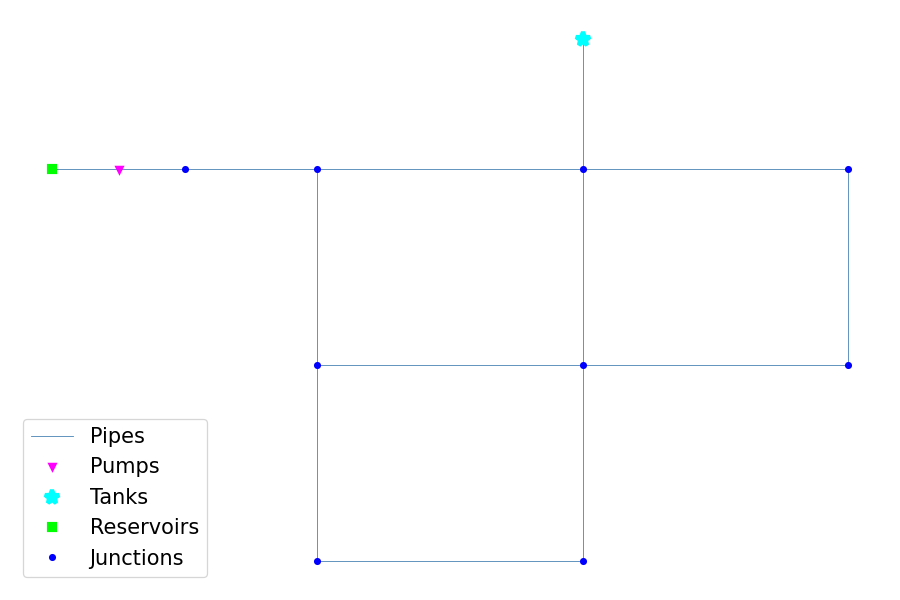

Usage
Minimum Example:
from epyt import epanet
d = epanet('Net1.inp')
d.getNodeCount()
d.getNodeElevations()
Plot the network:
d.plot()
{kind=link}

Lists all available functions and properties:
dir(d)
Retrieve some examples for the function:
help(d.getNodeElevations)
Help on method getNodeElevations in module epyt.epanet:
getNodeElevations(*argv) method of epyt.epanet.epanet instance
Retrieves the value of all node elevations.
Example:
>>> d.getNodeElevations() # Retrieves the value of all node elevations
>>> d.getNodeElevations(1) # Retrieves the value of the first node elevation
>>> d.getNodeElevations([4, 5, 6]) # Retrieves the value of the 5th to 7th node elevations
See also setNodeElevations, getNodesInfo, getNodeNameID,
getNodeType, getNodeEmitterCoeff, getNodeInitialQuality.
How to fix/report bugs
To fix a bug Fork the EPyT, Edit the code and make the appropriate change, and then Pull it so that we evaluate it.
Keep in mind that some bugs may exist in the EPANET libraries, in case you are not receiving the expected results.